Study Guide for Midterm
Note that this is a study guide, not a sample exam - it is much longer than your exam will be. However, the ideas and the question types represented here (along with your homework) will help prepare you for your exam. This exam covers material from 1.1 to 1.9 (except 1.6). This study guide was originally prepared by Jeanette Martin, and modified for our class by me. Contact me if you have any questions.

To recieve full credit for correct answers, it is necessary to
show
your work and/or provide your reasoning. When row operations are
needed,
indicate at each step which row operations were performed. No
programmable
or graphing calculators are allowed.
Answers to these questions are here.
1. Consider the following systems of equations. For each system,
(i) Write the system as a matrix equation.
(ii) Write the system as a vector equation.
(iii) Give the augmented matrix of the system.
(iv) Solve the system. Write the solution in parametric vector form.
| (a)
x1 + 6x2 + 2x3 = 5 |
(b)
x1 + 7x2 - 2x3 = 8 |
2. Discuss whether the appropriate space (ie, R2, R3,
etc) is spanned by each set of vectors. Identify which sets of
vectors
are linearly independent.
| (a) | (b) | (c) |
| (d) | (e) | (f) |
3. Determine all h and k, if any, so that the
system (i)
has no solution, (ii) has a unique solution, (iii) has many solutions.
| (a)
x1 + 2 x2
= 1 |
(b)
x1 + x2
= k |
4. For what values of h is v3 in
the Span {v1, v2}?
For what values of h is {v1,v2,v3}
linearly dependent?
| (a) | (b) |
5. Determine the values of h such that the matrix is
the augmented
matrix of a consistent linear system.
| (a) | (b) | (c) |
6. Suppose A is a 7 x 4 matrix.
(a) How many pivots must A have if its columns are
linearly independent?
Why?
(b) Is it possible for the columns of A to span R4 ?
Why?
(c) Is it possible for the columns of A to span R7 ?
Why?
7. Suppose B is a 5 x 8 matrix.
(a) How many pivots must B have if its columns are
linearly independent?
Why?
(b) Is it possible for the columns of B to span R5 ?
Why?
(c) Is it possible for the columns of B to span R8 ?
Why?
8. Show that if v1, v2, v3, v4, and v5 are in R5 and v3 = 0, then {v1, v2, v3, v4, v5} is linearly dependent.
9. Describe all solutions of Ax = 0 in
parametric
vector form, where A is row equivalent to the given matrix.
State
whether the solution set is trivial or nontrivial.
| (a)
A = |
(b)
A = |
(c)
A = |
10. Determine whether each of the following systems is
consistent or
inconsistent. When possible, solve the system, and describe the
solution
set in parametric vector form. State whether the solution set is unique
or not unique.
| (a)
x1 + 7x2 - 2x3
- 10x4 + 3x5 = 8 |
(b)
x1 + 5x2
- 2x3
- 8x4 = 8 |
| (c)
-2x1 + x2
- 4x3
= -3 |
(d)
x1 + x2
- 2x3 - 5x4 = 0 |
- x2
- x3 + x4
= 0
x1 + x2 + x3
+ x4 = 6
2x1 + 4x2 + 2x3
- 2x4 = -1
3x1 + x2 - 2x3
+ 2x4 = 3
12. Determine if the following matrices are in reduced
echelon
form, echelon form, or neither.
| (a)
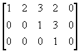 |
(b)
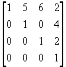 |
| (c)
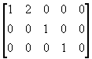 |
(d)
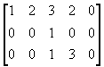 |
13. Reduce the matrix to reduced echelon form.
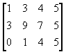
14. Find the general solutions of the system whose augmented matrix is given below.
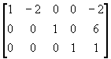
15. Determine if b is a linear combination of the
vectors formed
from the columns of matrix A.
| (a)
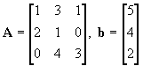 |
(b)
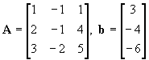 |
16. Let 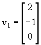, 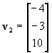, 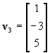
Is v2 in Span{v1, v3}? If yes, express v2 as a linear combination of v1 and v3. If no, explain why not.
17. Show that v2 is in Span {v1, v2, v3, v4, v5}.
18. Compute the product Ab.
| (a) 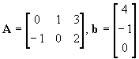 |
(b)
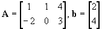 |
19. List five vectors in the Span {v1, v2}, showing the
weights on v1
& v2 used to generate each vector, where
| v1 = | v2 = |
20. Find a vector x whose image under T is b,
where T
is defined by T(x) = Ax. Determine
whether x
is unique.
| A= | b= |
21. How many rows and columns must a matrix A have in order to define a mapping from:
(a) R2 into R7 by the rule T(x) = Ax? Explain.
(b) R4 into R3 by the rule T(x) = Ax? Explain.
22. Find all x in R3 that are mapped into
the zero
vector by the transformation
x ->Ax
for
A =
23. Let
| x =
|
v = | w = | z = |
Let T: R3 -> R3 be a linear transformation that maps x into x1v + x2w + x3z. (a) Find a matrix A such that T(x) = Ax for each x.
(b) Find the image of u = under the transformation T.
24. Let
| and let | ||
| T (e1) = |
T (e2) = |
T (e3) = |
ind the images of
and  under T.
under T.
25. Let T: R2 -> R6 be a linear transformation, where T (e1) = (5, -2, 3, 0, 1, 3) and T (e2) = (1, 2, 3, 4, 5, 6), and e1 = (1, 0) and e2 = (0, 1). Find the standard matrix of T.
26. Let T: R2 -> R2 be a linear transformation, where T is a vertical shear transformation that maps e1 into e1 + 5e2 but leaves the vector e2 unchanged. Find the standard matrix of T.
27. Let T: R2 -> R2 be a linear transformation, where T is a horizontal shear transformation that maps e2 into e2 - 4e1 but leaves the vector e1 unchanged. Find the standard matrix of T.
28. Let T: R3 -> R4 be a
linear transformation,
where
T (x) = T (x1, x2, x3) = (x1 -
3x2 - 6x3, -x1+ 3x2 - 4x3,
x1 - 3x2 - x3, -2x2+ 4x3).
(a) Does T map R3 onto R4? Why or why
not?
(b) Is T a one-to-one mapping? Why or why not?
29. Let T: R3 -> R3 be a
linear transformation,
where
T (x) = T (x1, x2, x3) = (x1 -
x2 - 5x3, -x1+ x2 - 2x3,
x1 - 3x2 - 2x3).
(a) Does T map R3 onto R3? Why or why
not?
(b) Is T a one-to-one mapping? Why or why not?
Look at the answers